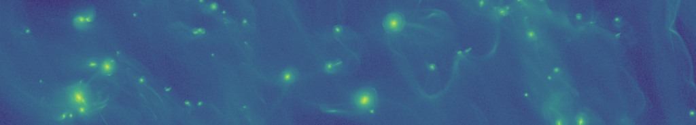

A327 Zaffarano
Ames, IA 50010, USA
+1 (515) 294-2219
jbsimon.astro 'at' gmail.com

Jake Simon
Assistant Professor
Iowa State University
3D Streaming Instability 2
Evolution of the streaming instability in a 3D local disk patch (x direction is radial, y direction is azimuthal); here, radial filaments have already formed (see this movie), and the movie shows the gravitational collapse of these filaments into planetesimals. (This movie created by Rixin Li)